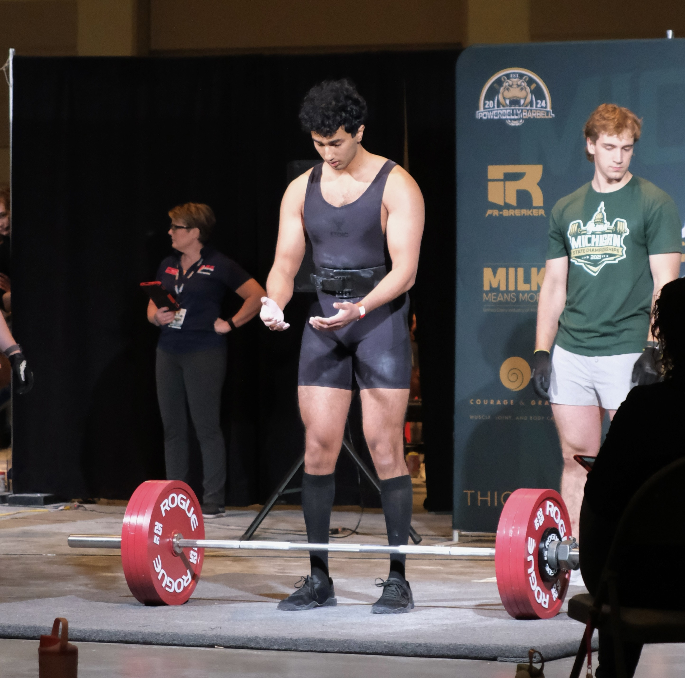
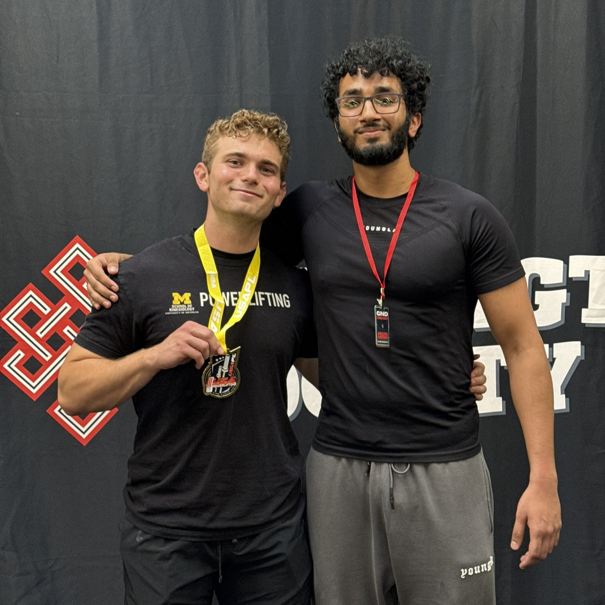
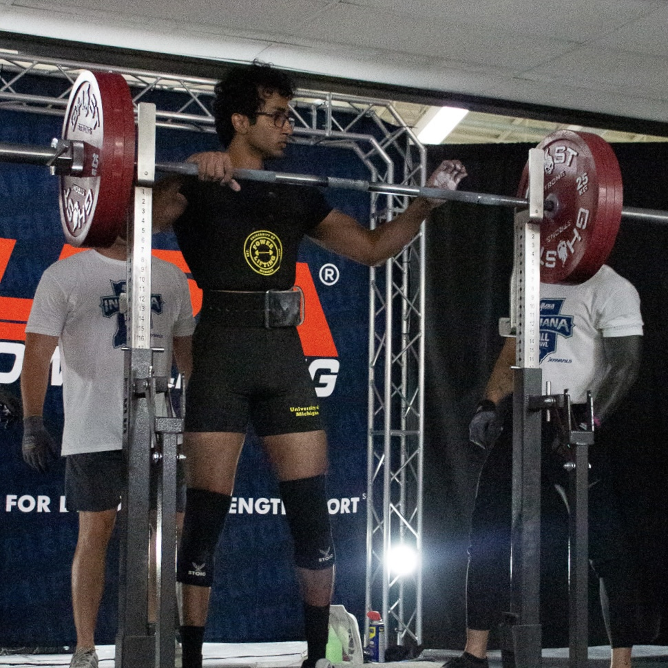
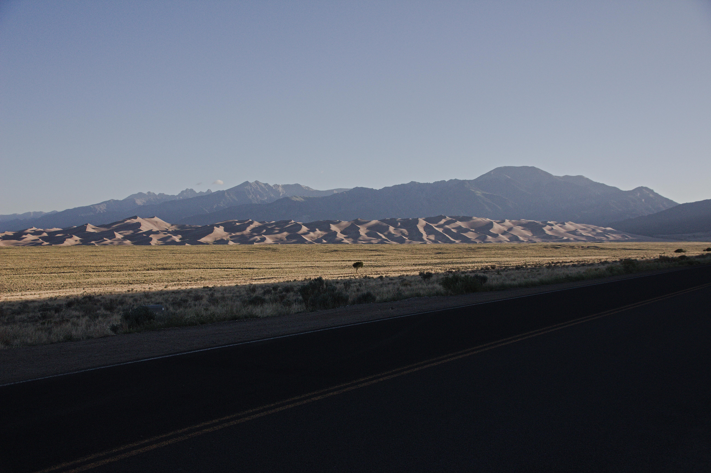

Outside the office
Activities
01 — sport
Powerlifting
I've competed in 2 powerlifting meets so far, and I plan to compete again in late 2026/early 2027. I enjoy the process of training and programming, and I'm always interested in learning more about how my body responds to different training regimens and techniques.
I also enjoy the social aspect of powerlifting. Especially at non-commercial powerlifting gyms, I learn a lot from other lifters, and I enjoy sharing my own experiences and insights as well.



02 — travel
Hiking & solo travel
I've done most of my hiking solo, which I prefer. You move at your own pace, stop when something is worth stopping for, and don't have to negotiate with anyone.
Recent trips include Great Sand Dunes National Park in Colorado and the Smoky Mountains. I tend to gravitate toward places that are a little harder to get to and a little less visited.
The planning is part of it too. Figuring out where to go, how to get there, and what's actually worth the effort is something I enjoy as much as the trip itself.


